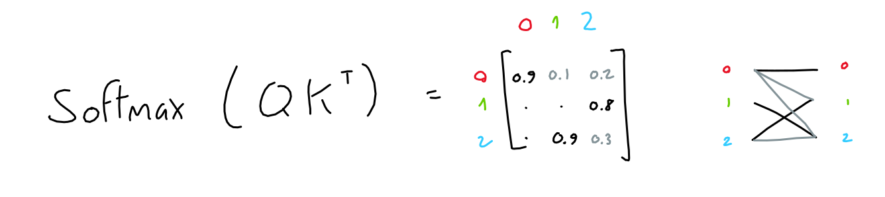
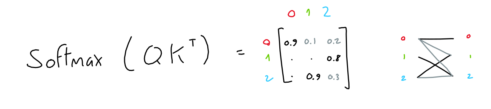

How deep is the machine?
The Artificial Curiosity Series
The GPT-3 Architecture, on a Napkin
There are so many brilliant posts on GPT-3, demonstrating what it can do, pondering its consequences, vizualizing how it works. With all these out there, it still took a crawl through several papers and blogs before I was confident that I had grasped the architecture.
So the goal for this page is humble, but simple: help others build an as detailed as possible understanding of the GPT-3 architecture.
Or if you're impatient, jump straight to the full-architecture sketch.
Original Diagrams
As a starting point, the original transformer and GPT papers provide us with the following diagrams:

Not bad as far as diagrams go, but if you're like me, not enough to understand the full picture. So let's dig in!
In / Out
Before we can understand anything else, we need to know: what are the inputs and outputs of GPT?

The input is a sequence of N words (a.k.a tokens). The output is a guess for the word most likely to be put at the end of the input sequence.
That's it! All the impressive GPT dialogues, stories and examples you see posted around are made with this simple input-output scheme: give it an input sequence – get the next word.
Not all heroes wear -> capes
Of course, we often want to get more than one word, but that's not a problem: after we get the next word, we add it to the sequence, and get the following word.
Not all heroes wear capes -> but
Not all heroes wear capes but -> all
Not all heroes wear capes but all -> villans
Not all heroes wear capes but all villans -> do
repeat as much as desired, and you end up with long generated texts.
Actually, to be precise, we need to correct the above in two aspects.
1. The input sequence is actually fixed to 2048 words (for GPT-3). We can still pass short sequences as input: we simply fill all extra positions with "empty" values.
2. The GPT output is not just a single guess, it's a sequence (length 2048) of guesses (a probability for each likely word). One for each 'next' position in the sequence. But when generating text, we typically only look at the guess for the last word of the sequence.

That's it! Sequence in, sequence out.
Encoding
But wait a second, GPT can't actually understand words. Being a machine-learning algorithm, it operates on vectors of numbers. So how do we turn words into vectors?
The first step is to keep a vocabulary of all words, which allows us to give each word a value. Aardvark is 0, aaron is 1, and so on. (GPT has a vocabulary of 50257 words).
As a result, we can turn each word into a one-hot encoding vector of size 50257, where only the dimension at index i (the word's value) is 1, and all others are 0.
Of course, we do this for every word in the sequence,

Which results in a 2048 x 50257 matrix of ones and zeroes.
Note: For efficiency, GPT-3 actually uses byte-level Byte Pair Encoding (BPE) tokenization. What this means is that "words" in the vocabulary are not full words, but groups of characters (for byte-level BPE, bytes) which occur often in text. Using the GPT-3 Byte-level BPE tokenizer, "Not all heroes wear capes" is split into tokens "Not" "all" "heroes" "wear" "cap" "es", which have ids 3673, 477, 10281, 5806, 1451, 274 in the vocabulary. Here is a very good introduction to the subject, and a github implementation so you can try it yourself.
Embedding
50257 is pretty big for a vector, and it's mostly filled with zeroes. That's a lot of wasted space.
To solve this, we learn an embedding function: a neural network that takes a 50257-length vector of ones and zeroes, and outputs a n-length vector of numbers. Here, we are trying to store (or project) the information of the word's meaning to a smaller dimensional space.
For example, if the embedding dimension is 2, it would be like storing each word at a particular coordinate in 2D space.

Another intuitive way to think about it is that each dimension is a made-up property, like "softness", or "shmlorbness", and given a value for each property we can know exactly which word is meant.
Of course, the embedding dimensions are typically larger than 2: GPT uses 12288 dimensions.
In practice, each word one-hot vector gets multiplied with the learned embedding network weights, and ends up as a 12288 dimension embedding vector.
In arithmetic terms, we multiply the 2048 x 50257 sequence-encodings matrix with the 50257 x 12288 embedding-weights matrix (learned) and end up with a 2048 x 12288 sequence-embeddings matrix.

From now on, I will draw 2D matrices as small little blocks with the dimensions written next to them. When applicable, I separate the matrix lines to make it clear that each line corresponds to a word in the sequence.
Also note that due to how matrix multiplication works, the embedding function (a.k.a the embedding weight matrix) is applied to each word encoding (a.k.a row in the sequence-encodings matrix) separately. In other words, the result is the same as passing each word encoding vector separately to the embedding function, and concatenating all the results at the end. What this means: this far in the process, there is no information flowing across the sequence, and no information on the absolute or relative position of tokens.
Positional Encoding
To encode the position of the current token in the sequence, the authors take the token's position (a scalar i, in [0-2047]) and pass it through 12288 sinusoidal functions, each with a different frequency.
The exact reason for why this works is not entirely clear to me. The authors explain it as yielding many relative-position encodings, which is useful for the model. For other possible mental models to analyze this choice: consider the way signals are often represented as sums of periodic samples (see fourier transforms, or SIREN network architecture), or the possibility that language naturally presents cycles of various lengths (for example, poetry).
The result is, for each token, a 12288 vector of numbers. Just as with the embeddings, we combine those vectors into a single matrix with 2048 rows, where each row is the 12288-column positional-encoding of a token in the sequence.

Finally, this sequence-positional-encodings matrix, having the same shape as the sequence-embeddings matrix, can simply be added to it.

Attention (Simplified)
Simply put, the purpose of attention is: for each output in the sequence, predict which input tokens to focus on and how much. Here, imagine a sequence of 3 tokens, each represented with a 512-values embedding.
The model learns 3 linear projections, all of which are applied to the sequence embeddings. In other words, 3 weight matrices are learned which transform our sequence embeddings into three separate 3x64 matrices, each purposed for a different task.

The first two matrices ("queries" and "keys") are multiplied together (QKT), which yields a 3x3 matrix. This matrix (normalized through softmax) represents the importance of each token to each other tokens.
Note: This (QKT) is the only operation in GPT which operates across words in the sequence. It is the only operation where matrix rows interact.
 

The third matrix ("values") is multiplied with this importance matrix, resulting in, for each token, a mix of all other token values weighted by the importance of their respective tokens.
For example, if the importance matrix is only ones and zeroes (each token has only one other token which is of importance), the result is like selecting rows in the values matrix based on which token is most important.
I hope that this helped, if not with the intuitive understanding of the attention process, at least with understanding the exact algebra which is used.
Multi-Head Attention
Now, in the GPT model presented by the authors, they use multi-head attention. All this means is that the above process is repeated many times (96x in GPT-3), each with a different learned query, key, value projection weights.
The result of each attention head (a single 2048 x 128 matrix) are concatenated together, yielding a 2048 x 12288 matrix, which is then multiplied with a linear projection (which doesn't change the matrix shape), for good measure.

Note: the paper mentions that GPT-3 uses sparse attention, which allows more efficient computation. Honestly, I haven't taken the time to understand exactly how it's implemented. You're on your own, good luck!
Feed Forward
The feed forward block is a good-old multi-layer-perceptron with 1 hidden layer. Take input, multiply with learned weights, add learned bias, do it again, get result.
Here, both input and output shapes are the same ( 2048 x 12288 ), but the hidden layer has a size 4*12288.

To be clear: I also draw this operation as a circle, but unlike other learned projections in the architecture (embedding, query/key/value projections) this "circle" actually consists of two projections (learned-weight matrix multiplied with the input) in a row, with the learned biases added after each one, and finally a ReLU.
Add & Norm
After both the Multi-Head attention and the Feed Forward blocks, the input of the block is added to it's output, and the result is normalized. This is common in deep learning models (since ResNet).

Note: Not reflected in any of my sketches is the fact that since GPT-2, "Layer normalization was moved to the input of each sub-block, similar to a pre-activation residual network and an additional layer normalization was added after the final self-attention block"
Decoding
We're almost there! Having passed through all 96 layers of GPT-3's attention/neural net machinery, the input has been processed into a 2048 x 12288 matrix. This matrix is supposed to contain, for each of the 2048 output positions in the sequence, a 12288-vector of information about which word should appear. But how do we extract this information?
If you remember in the Embedding section, we learned a mapping which transforms a given (one-hot encoding of a) word, into a 12288-vector embedding. It turns out, we can just reverse this mapping to transform our output 12288-vector embedding back into a 50257-word-encoding. The idea is, if we spent all this energy learning a good mapping from word to numbers, we might as well reuse it!

Of course, doing this won't give us ones and zeroes like we started with, but that's a good thing: after a quick softmax, we can treat the resulting values as probabilities for each word.
In addition, the GPT papers mention the parameter top-k, which limits the amount of possible words to sample in the output to the k most likely predicted words. For example, with a top-k parameter of 1, we always pick the most likely word.

Full Architecture
And there you have it: a few matrix multiplications, some algebra, and we have ourselves a state-of-the-art, natural language processing monster. I've drawn all of the parts together into a single schematic, click it to see the full-sized version.

The operations which contain learnable weights are highlighted in red.